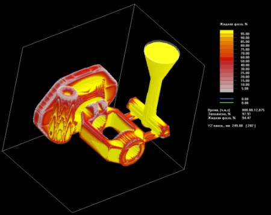
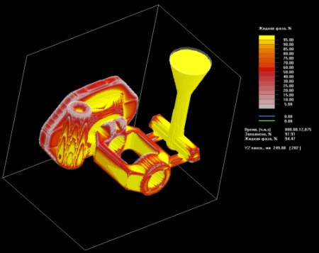

Діяльність компанії сфокусована навколо різних аспектів підготовки ливарного виробництва.
Ключову роль відіграє інженерний аналіз та технології математичного моделювання технологічних процесів.
Фахівці компанії мають багаторічний практичний виробничий досвід роботи у передових CAD/CAM/CAE системах для підготовки та оптимізації різних виробничих технологій.
Вихідні матеріали для проектування:


Технологія лиття виливків у землю, кокіль, ЛГМ, ЛВМ розраховується за допомогою сучасних технологічних програм, що дозволяє в теорії виявити дефекти лиття та у практики знизити брак до мінімуму.
 

Виробництво оснащене верстатами з числовим програмним управлінням (ЧПУ), що дозволяє виконати оснастку будь-якої складності з великою точністю та в короткі терміни.
Проектується та виготовляється наступне оснащення:
Лиття в піщано-глинисті форми (ПГФ) або піщано-глинисту суміш (ПГС). У ролі ливарної оснастки виготовляються багаторазові моделі-опоки та стрижневі ящики, за якими отримують напівформи з піщаної суміші з порожнинами для
заливки металу. У цих порожнинах утворюється виливка деталі після охолодження.
Перевагою лиття в землю (ПГФ) є невисока вартість, легкість у доопрацюванні та ремонті.
Недоліком - середня точність розмірів
та підвищена шорсткість поверхні.
Лінія вакуумно-плівкового формування (V-процес) - аналогічна литтю в піщано-глинисту форму, але дозволяють не використовувати сполучних смол у сухому піску. Виготовляється модель-опока з технологічними отворами та випорами.
Для отримання виливки модель-опока на спеціальному устаткуванні покривається герметичною плівкою. Потім засипається сухий пісок. Зверху опока із піском закривається герметичною плівкою. З Опоки видується повітря, в результаті
піщана форма твердне, зберігаючи форму, поки відкачується повітря. Піщана форма з усіх боків закрита плівкою. Багаторазова МДФ модель виймається. Піщану напівформу можна використовувати для заливки металу. Після затвердіння
металу відключається вакуумне обладнання та піщана форма розсипається в пісок, який після просіювання можна використовувати повторно.
Переваги вакуумно-плівкового формування - дешевизна витратних матеріалів, чистота
поверхні виливки. Відсутність необхідності додаткового очищення виливків.
Недоліки V-процесу: дорожнеча обладнання та необхідність додаткового навчання персоналу.
Лиття в холодно-твердіючі суміші. Виготовляється багаторазова модель-опока, за допомогою якої отримують одноразові напівформи з особливої суміші. Склад ХТС входять формувальний пісок різних фракцій та композитна самотвердіюча
смола.
Переваги - менша шорсткість поверхні, більш висока точність та необхідність у зменшених припусках на обробку. Можливе отримання більш складної геометрії з дрібним гравіюванням. Менше ймовірність утворення пор та
раковин. Знижена витрата металу.
Недоліком ХТС технології є висока вартість компонентів суміші.
Стержневі ящики - це пристосування для формування стрижнів із піщаної суміші. Стрижні встановлюються в посадочні місця в нижню піщану напівформу або приклеюються у верхню напівформу. Застосування стрижнів необхідне для забезпечення в металевому виливку внутрішніх порожнин різної геометрії. Стрижневі ящики можуть складатися тільки з одного елемента (витряхні ящики) або з різних компонентів для особливо складної геометрії. У зібраному стрижневому ящику є відкриті вікна для наповнення піщаною сумішшю.
Прес-форми для лиття під тиском Розплавлений метал заповнює багаторазову прес-форму під тиском поршня або за рахунок відцентрових сил. Застосовуються для серійного виробництва та автоматизованих високопродуктивних ліній.
Переваги методу: висока точність виготовлення, підвищені механічні властивості виливки, економія металу.
Недоліками лиття під тиском є висока вартість обладнання та обмеження щодо геометрії виробів.
Лиття під низьким тиском (ЛНТ). У процесі ливарного виробництва прес-форма заповнюється розплавленим металом знизу вгору під тиском 0,7 - 1 атм. Тиск утримує метал у прес-формі до затвердіння. Часто застосовують для тіл
обертання з тонкою стінкою, наприклад автомобільні колеса або симетричної геометрії.
Перевагою технології ЛНТ є зменшення утворення оксидів та зниження пористість виливки. Підвищена герметичність та міцність. Можливість заливання тонкостінних елементів
Недоліком технології ЛНТ є часте зношування
металопроводу та складність регулювання швидкості потоку металу при зміні номенклатури виробів. Найчастіше використовують для металів із низькою температурою плавлення, наприклад, алюміній.
Лиття за газифікованими моделями (ЛГМ). Виготовляється алюмінієва прес-форма з рівномірною товщиною стінки від поверхні виливка. Прес-форму заповнюють пінополістироЛВМ або іншим аналогічним матеріаЛВМ. Отриману пінопластову
модель покривають антипригарною фарбою, приклеюють до пінопластової планки і поміщають в ємність-опоку. Ємність заповнюють піщаною сумішшю, щоб був доступ до одного кінця планки. Метал заливають у пінополістирол. В результаті
пінополістирол випаровується, а його місце займає метал.
Для великогабаритних виробів створюється набір прес-форм для частин виливка. Отримані пінопластові частини в процесі склеюються для отримання монолітної деталі
Перевагою технології ЛГМ є точність і низька шорсткість виливків без лінії роз'єму.
Недоліком технології ЛГМ є більш висока ціна моделі при дрібносерійному виробництві та крихкість моделей.
Лиття по виплавлюваних моделях (ЛВМ). Виготовляється прес-форма для заповнення легоповкими матеріалами (парафіном, воском, стеарином та ін). Отриману модель покривають вогнестійким складом та засипають у суміш для формування.
Після твердіння суміші віск випарюють до одержання порожнини. У цю порожнину надалі заливають метал щоб одержати виливки.
Перевагою технології ЛВМ є можливість виготовлення деталей зі сплавів, що не піддаються механічній обробці. Висока точність і дуже низька шорсткість виливків.
Недоліком технології ЛВМ є дорожнеча технології,
яку застосовують, в основному, для відповідальних деталей, наприклад, приладобудування, авіаційної промисловості.
Прес-форми застосовуються для малогабаритних виробів. Можуть бути одномісними чи багатомісними. Оснащуються штовхачами для вилучення виробу, підкладними плитами для забезпечення ходу штовхачів
Металеві ливарні форми (кокілі) виготовляються зі сталі та чавуну. Можуть бути роз'ємними та нероз'ємними з металевими або піщаними стрижнями. Лиття в кокіль застосовують, як правило, для серійного виробництва.
Перевагою: лиття в кокіль є: отримання виливків точніших розмірів з меншою шорсткістю; кращих механічних властивостей виробу через дрібнозернисту структуру металу; вищою продуктивністю праці.
Недоліком застосування кокілів
- висока вартість; низька газопроникність і податливість, що призводить до утворення газових раковин та тріщин у виливках. Проблемність отримання виливків складної форми. Є ймовірність появи у чавунних виливків вибілених поверхонь,
що важко обробляються.


Підприємство має можливість випускати ливарну продукцію, виливки з чавуну, сталі, кольорових метелів.
На виробництві є ділянка лиття в землю, ХТС і ділянка точного лиття за моделями, що випалюються.

Підготовка всієї технічної інформації у розвиток ливарного виробництва:
Фахівці компанії мають різнобічний практичний виробничий досвід роботи, організації нових виробництв, освоєння технологій та постановки на виробництво різних деталей та виливків високої складності.
2009 - Підприємство «Ливарне оснащення»